A loop can be used to tell a program to execute statements repeatedly.
Suppose that you need to display a string (e.g.,Welcome to Java!) a hundred times. It would be tedious to have to write the following statement a hundred times.
So, how do you solve this problem? Java provides a powerful construct called a loop that controls how many times an operation or a sequence of operations is performed in succession. Using a loop statement, you simply tell the computer to display a string a hundred times without having to code the print statement a hundred times, as follows:
The variable count is initially 0. The loop checks whether count < 100 is true. If so, it executes the loop body to display the message Welcome to Java! and increments count by 1. It repeatedly executes the loop body until count < 100 becomes false. When count < 100 is false < 100(i.e., when count reaches 100), the loop terminates and the next statement after the loop statement is executed.
Loops are constructs that control repeated executions of a block of statements. The concept of looping is fundamental to programming.
Java provides three types of loop statements:
A while loop executes statements repeatedly while the condition is true.
The syntax for the while loop is:
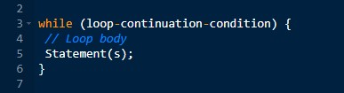The part of the loop that contains the statements to be repeated is called the loop body. A one-time execution of a loop body is referred to as an iteration (or repetition) of the loop.
Each loop contains a loop-continuation-condition, a Boolean expression that controls the execution of the body. It is evaluated each time to determine if the loop body is executed.
If its evaluation is true, the loop body is executed; if its evaluation is false, the entire loop terminates and the program control turns to the statement that follows the while loop.
The loop for displaying Welcome to Java! a hundred times introduced in the preceding section is an example of a while loop.
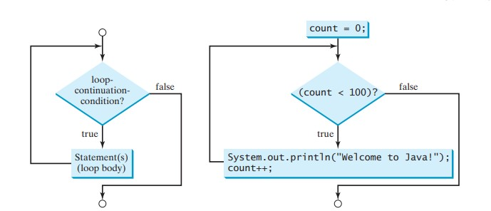A do-while loop is the same as a while loop except that it executes the loop body first and then checks the loop continuation condition
The do-while loop is a variation of the while loop. Its syntax is:
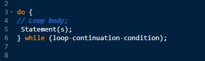The loop body is executed first, and then the loop-continuation-condition is evaluated. If the evaluation is true, the loop body is executed again; if it is false, the do-while loop terminates.
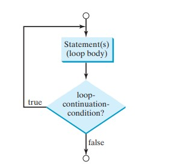The do-while loop executes the loop body first, then checks the loopcontinuation-condition to determine whether to continue or terminate the loop.
A for loop has a concise syntax for writing loops
In general, the syntax of a for loop is:
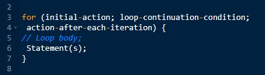The flowchart of the for loop is shown in right-figure:
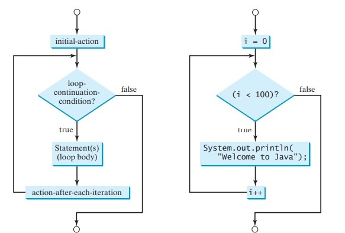The for loop statement starts with the keyword for, followed by a pair of parentheses enclosing the control structure of the loop. This structure consists of initial-action, loop-continuation-condition, and action-after-each-iteration. The control structure is followed by the loop body enclosed inside braces. The initial-action, loopcontinuation-condition, and action-after-each-iteration are separated by semicolons.
Methods can be used to define reusable code and organize and simplify coding.
Suppose that you need to find the sum of integers from 1 to 10, from 20 to 37, and from 35 to 49, respectively. You may write the code as follows:
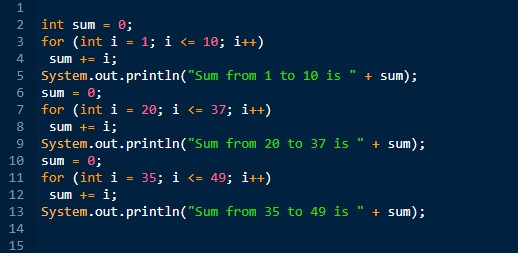You may have observed that computing these sums from 1 to 10, from 20 to 37, and from 35 to 49 are very similar except that the starting and ending integers are different. Wouldn’t it be nice if we could write the common code once and reuse it? We can do so by defining a method and invoking it.
The preceding code can be simplified as follows:
A method is a collection of statements grouped together to perform an operation. In earlier chapters you have used predefined methods such as System.out.println, System.exit, Math .pow, and Math.random. These methods are defined in the Java library. In this chapter, you will learn how to define your own methods and apply method abstraction to solve complex problems.
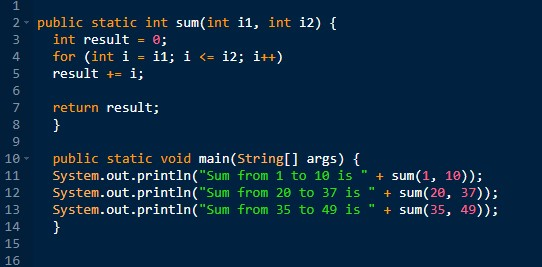A method definition consists of its method name, parameters, return value type, and body.
The syntax for defining a method is as follows:
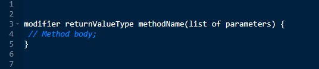Let’s look at a method defined to find the larger between two integers. This method, named max, has two int parameters, num1 and num2, the larger of which is returned by the method. The figure below illustrates the components of this method.
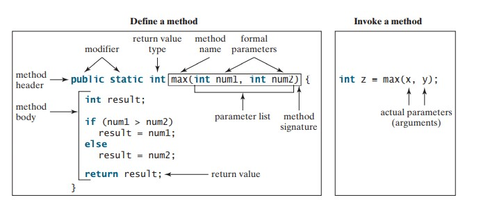A method may return a value. The returnValueType is the data type of the value the method returns. Some methods perform desired operations without returning a value. In this case, the returnValueType is the keyword void. For example, the returnValueType is void in the main method, as well as in System.exit, and System.out.println. If a method returns a value, it is called a value-returning method; otherwise it is called a void method.
The variables defined in the method header are known as formal parameters or simply parameters. A parameter is like a placeholder: when a method is invoked, you pass a value to the parameter. This value is referred to as an actual parameter or argument. The parameter list refers to the method’s type, order, and number of the parameters. The method name and the parameter list together constitute the method signature. Parameters are optional; that is, a method may contain no parameters. For example, the Math.random() method has no parameters.
The method body contains a collection of statements that implement the method. The method body of the max method uses an if statement to determine which number is larger and return the value of that number. In order for a value-returning method to return a result, a return statement using the keyword return is required. The method terminates when a return statement is executed.
Calling a method executes the code in the method.
In a method definition, you define what the method is to do. To execute the method, you have to call or invoke it. There are two ways to call a method, depending on whether the method returns a value or not.
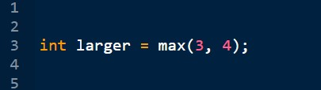If a method returns a value, a call to the method is usually treated as a value. For example:
calls max(3, 4) and assigns the result of the method to the variable larger.
When a program calls a method, program control is transferred to the called method. A called method returns control to the caller when its return statement is executed or when its methodending closing brace is reached
Each time a method is invoked, the system creates an activation record (also called an activation frame) that stores parameters and variables for the method and places the activation record in an area of memory known as a call stack. A call stack is also known as an execution stack, runtime stack, or machine stack, and it is often shortened to just “the stack.” When a method calls another method, the caller’s activation record is kept intact, and a new activation record is created for the new method called. When a method finishes its work and returns to its caller, its activation record is removed from the call stack.